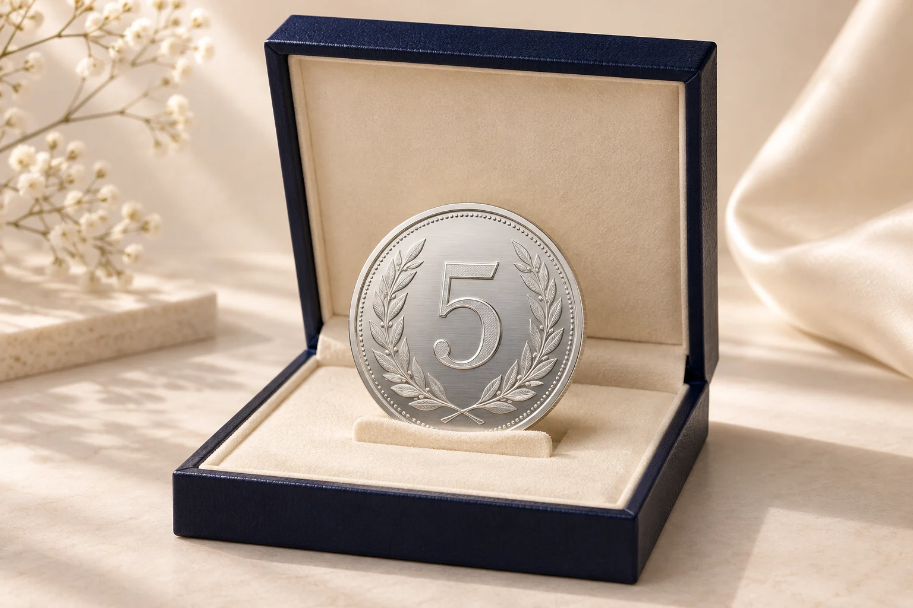
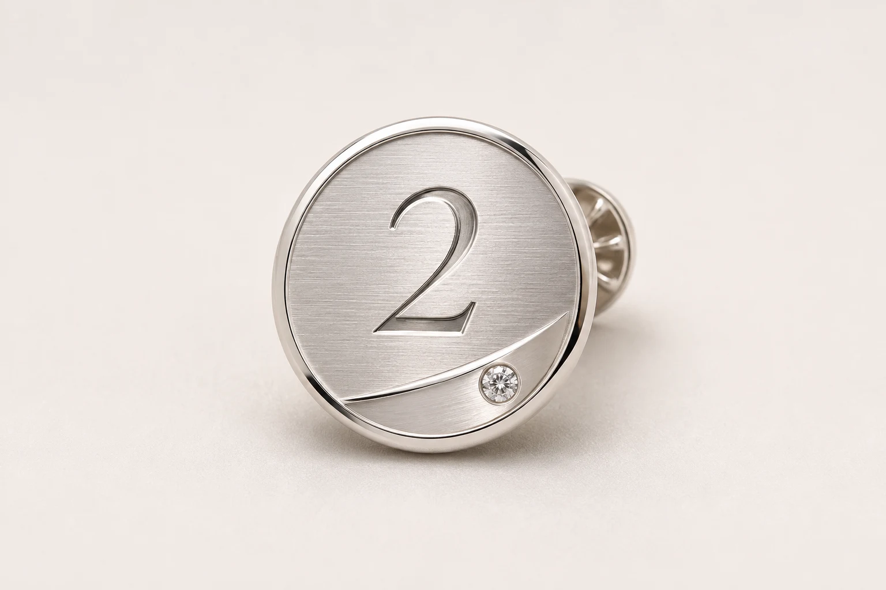

Client & partner relationships
Thank a strategic partner, celebrate a relationship anniversary or mark the completion of a significant project.
Victoria Diamonds · Corporate collaborations
Jewellery with a story your people can carry.
For the partnership that changed your business. The colleague who shaped it. The moment worth remembering. Create a personal keepsake with our London jewellery design team.
Plan your corporate giftExplore the design possibilities
Victoria Diamonds · Corporate collaborations
Bespoke jewellery for the people who shaped your business.
Mark an anniversary, retirement or company event with a gift designed around the occasion.
Plan your corporate giftExplore the design possibilitiesThank a strategic partner, celebrate a relationship anniversary or mark the completion of a significant project.
Recognise long service, a promotion, a retirement or exceptional achievement with a lasting personal detail.
Create a keepsake for a leadership retreat, client dinner, product launch or private hospitality experience.
Celebrate an anniversary, a new office or a new chapter with a design connected to your company’s identity.
Personalised corporate gifts
Choose a design and make it yours with custom engraving, materials and presentation.
A gender-neutral keepsake for five or ten years of service, an anniversary or a team milestone. Personalise the engraving and presentation box.
Discuss this design
A circular pin designed for a two-year anniversary, employee of the year or another milestone. Add a date, name or company motif.
Discuss this design
Personalise a pair with initials or a company emblem.
Discuss this design
Mark a shared milestone with a date or personal engraving.
Discuss this designPersonalised corporate gifts
A gender-neutral keepsake for five or ten years of service, an anniversary or a team milestone. Personalise the engraving and presentation box.
Discuss this designA circular pin designed for a two-year anniversary, employee of the year or another milestone. Add a date, name or company motif.
Discuss this designWork with our designer on the engraving, materials, packaging and quantities for your occasion.
Let’s create something worth keeping
Send your company name, occasion, approximate quantity, budget per gift and required date. We’ll discuss a suitable direction with you.
By appointment · 59 Leather Lane, London EC1N 7TJ
+44 7594 442577 · general@victoria-diamonds.com